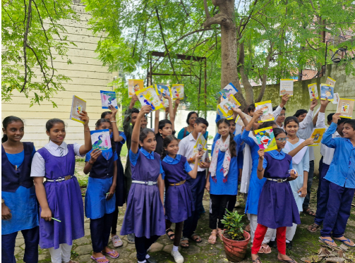
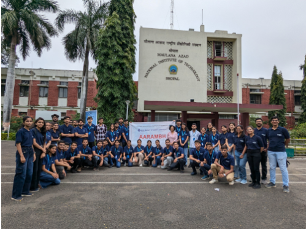
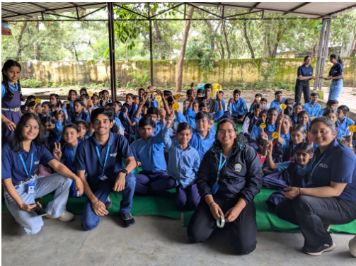
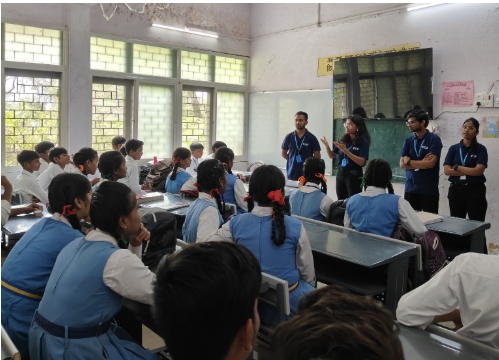
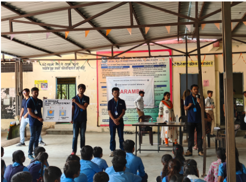
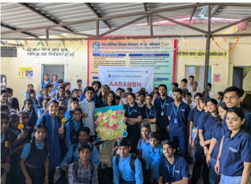

IEEE MANIT STUDENT BRANCH
It is one of the most active and recognized IEEE student branches in Central India,
known for its technical excellence, social initiatives like AARAMBH It provides students at
MANIT Bhopal with opportunities for networking, skill development,
and contributing to technology for humanity
About IEEE
IEEE MSB (MANIT Student Branch) is one of the most dynamic IEEE student branches in Central India, based at MANIT Bhopal. It is recognized for its blend of technical innovation and social responsibility. The branch has earned prestigious honors, including the Darrel Chong Medal (Gold), for impactful initiatives such as AARAMBH, which spreads technical awareness among underprivileged school students. IEEE MSB regularly organizes workshops, hackathons, and seminars that help students sharpen their skills in coding, electronics, and research while fostering leadership and teamwork.
Mission: Advance technology for humanity by fostering innovation and excellence.
Vision: Provide a platform for students to learn, collaborate, and contribute to technical and social causes.
Key Initiatives & Events
AARAMBH: A social outreach program targeting under-resourced schools. Focuses on spreading technical awareness and education among students. Technical Workshops & Hackathons: Regular events to build coding, electronics, and research skills. Networking Opportunities: Connects students with faculty, industry professionals, and IEEE global community.

OUR EVENTS




AARAMBH
It is a social initiative, organised by IEEE MSB, that focuses on encompassing a large number of students across numerous under -resourced schools.

SAMWAD
IEEE MSB every year orchestrates an event “SAMWAD“ under WIE, to realize the indomitable spirit of women and to praise and promote their significant contribution.

SCEECS
This conference helps to publish research papers on IEEE Xplore, providing the people with a plethora from which their research could be well accessed by anyone in the world.